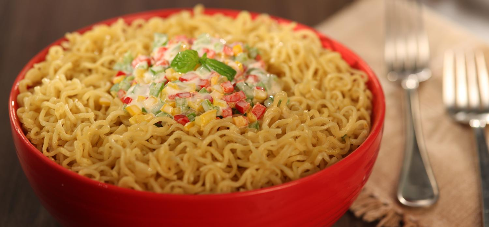

MAGGI

Description
Let's make MAGGI with a creamy and cheesy Italiano twist.
Ingredients
- MAGGI Noodle
- 1 tablespoon Olive Oil
- 1 teaspoon chopped Garlic
- 2 tablespoons chopped Basil leaves
- Half cup green capsicum
- 1/4th cup finely chopped red capsicum
- 1/4th cup yellow capsicum
- 2 tablespoons cheese spread
- 3/4th cup milk
Steps
- Just heat the oil and fry the garlic for about a minute. Then, toss in the basil leaves and fry them for another minute. Add all the capsicums, sauté for a couple of minutes and switch off the gas. Drop in the cheese spread and mix well.
- Cook a packet of MAGGI Masala Noodles and when it is done, lovingly pour the cheese and capsicum over the MAGGI.
This page heavily borrows from this webpage.